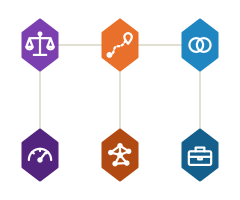
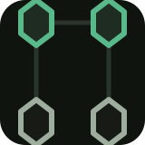

The six deliverables
Two rows of three: each tool (bottom) puts the reference-model part above it into practice. Hover or focus a hexagon for what it is; click to open its site.
SPII
Reference model and tools
Three reference-model parts on top, each with the tool that operationalises it below.
Colours
The brand is the green and warm paper of the overview page. Each deliverable pair shares a hue: the reference model is the lighter tone, its tool the deeper one. Set data-deliverable="2a" on any element to get --deliv-color, --deliv-ink, --deliv-tint and --deliv-on; set <html data-accent="2a"> to give a whole site that accent.
Hexagons
Each deliverable has its hexagon with a pictogram, as a separate SVG in assets/hex/ (for sites, cards and slides). In a page: <span class="spii-hex" data-deliverable="3b"></span>, size via --spii-hex-size.
Research activities
The research landscape has two groups of activities, each with its own icon: the research life cycle (green) and research administration (purple). They classify an infrastructure in the Principles Alignment Tool and place it in its research-landscape circle. As files in assets/icons/activities/; in a page <span class="spii-activity" data-activity="Discover"></span> (the text colour; data-activity-group on a parent gives the group colour); in a script SPII.activityIcon("Discover", 20).
Logo and favicon
assets/spii-logo.svg is the diagram of the overview page (it follows the system's light or dark mode); assets/spii-logo-pictograms.svg is the large version with the six pictograms; assets/favicon.svg is a square crop for browser tabs.


Use it in a site
Put this in the head of every page, in this order. Load spii-nav.js without defer, so the theme is set before anything paints. The top bar is placed first in the body, or at <div id="spii-topbar"></div>.
<link rel="stylesheet" href="https://surf-ori.github.io/spii-design-system/lib/oat.min.css">
<link rel="stylesheet" href="https://surf-ori.github.io/spii-design-system/spii.css">
<script src="https://surf-ori.github.io/spii-design-system/spii-nav.js"></script>
<script src="https://surf-ori.github.io/spii-design-system/lib/oat.min.js" defer></script>Every page gets a floating Feedback button at the bottom right. It opens a short dialog and then the issue form of the repo the page lives in, with the text filled in; data-feedback-field on <html> names the form field for the text (default feedback).
The theme (system, light, dark) is stored under spii-theme in localStorage and shared by all SPII sites. Pages can read it with SPII.theme(), change it with SPII.setTheme("dark"), and listen for the spii:theme event.
Components
.spii-callout, in a deliverable's colour with data-deliverable.Tag 1A Tag 2B Neutral tag